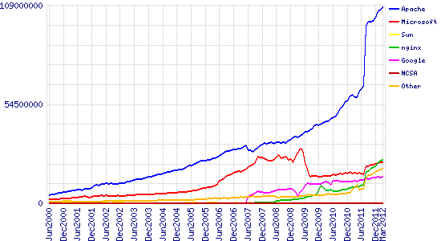

Server
Table of Contents
- 1 HTTP and Servers
- 2 Servers Return Representations
- 3 What resource to return?
- 4 Webserver
- 5 Extrapolate
- 6 Missing file?
- 7 HTTP Response Codes
- 8 Demo 200 OK
- 9 300s :: Redirect
- 10 400s :: Client errors
- 11 500s :: Server Errors
- 12 Fun
- 13 Response Headers
- 14 How Many Resources?
- 15 HTTP Versions
- 16 HTTP Versions
- 17 Why have different protocols?
- 18 Review
1 HTTP and Servers
2 Servers Return Representations
- Homework will be writing code to return HTML
- How do we decide which HTML to send?
- How do we use methods and headers?
- How do we represent errors?
3 What resource to return?
- How are resources specified?
3.1 With hostname and Path notes
people.ischool.berkeley.edu/~jackar/webarch2013/index.html- Absolute path?
3.2 Hostname/Path => Resource
- http://people.ischool.berkeley.edu/~jackar/webarch2013/index.html
- How to specify hostname in HTTP?
- How to specify path?
- What method to use?
4 Webserver
- Associate
/~jackar/webarch2013/index.htmlwith/home/jackar/public_html/webarch2013/index.html - Associate
/~jackar/webarch2013/colors.csswith/home/jackar/public_html/webarch2013/colors.css - Associate …
4.1 Gets old notes
- Instead of associating each file…
5 Extrapolate two_col
- Associate everything in
/~jackar/with everything in/home/jackar/public_html/ - This is a common feature of most webservers
Apachethe most popular

5.1 Webserver usage notes
- Apache is an open source webserver, one of the original
6 Missing file? animate
- What should we do if we request a file that is not there?
- Return "Oops!"
- Return nothing?
- Return standard HTML?
6.1 Ambiguous notes
- What about different languages?
- What about pages that you want to title "Oops!"
- How to tell the difference between an error and no data?
- What if you aren't expecting HTML? Wanted JSON?
- Don't take these for granted. You are the innovators.
7 HTTP Response Codes
- Numbers are unambiguous, can be read by machines
- Always return a response code
- Return text as well for human readability
7.1 In addition to content! notes
- In addition to content, we will return a response code
- Response code tell us how we're handling the request, how the content should be interpreted
7.2 HTTP Response Numbers
- 200s
- OK
- 300s
- Redirect
- 400s
- Client errors
- 500s
- Server errors
8 Demo 200 OK
telnet 128.32.78.16 80
GET /~jblomo/webarch2013/ HTTP/1.1
Host: people.ischool.berkeley.edu
HTTP/1.1 200 OK
Date: Fri, 20 Sep 2013 06:29:22 GMT
Server: Apache/2.2.22 (Fedora)
Last-Modified: Fri, 20 Sep 2013 06:28:44 GMT
ETag: "b7f00d0-a5-4e6cac83bff00"
Accept-Ranges: bytes
Content-Length: 165
Content-Type: text/html; charset=UTF-8
<!DOCTYPE html>
<html>
<head>
<title>Jim's Page</title>
</head>
<body>
<p>Hello class! This is a tiny HTML page.</p>
</body>
</html>
9 300s :: Redirect
- 301
- Permanent Redirect
- 302
- Temporary Redirect
Location- Header with URI of target
9.1 Difference? notes
- Permanent
- Resource has moved (Another server, etc.) update your bookmarks or links
- Temporary
- Site is down, play elevator music
10 400s :: Client errors
- 404
- Resource Not Found
10.1 Hooray notes
telnet 128.32.78.16 80
GET /~jblomo/notfound.html HTTP/1.1
Host: people.ischool.berkeley.edu
HTTP/1.1 404 Not Found
Date: Fri, 14 Sep 2012 06:07:58 GMT
Server: Apache/2.2.22 (Fedora)
Content-Length: 312
Content-Type: text/html; charset=iso-8859-1
<!DOCTYPE HTML PUBLIC "-//IETF//DTD HTML 2.0//EN">
<html><head>
<title>404 Not Found</title>
</head><body>
<h1>Not Found</h1>
<p>The requested URL /~jblomo/notfound.html was not found on this server.</p>
<hr>
<address>Apache/2.2.22 (Fedora) Server at people.ischool.berkeley.edu Port 80</address>
</body></html>
Connection closed by foreign host.
- We solved our problem: making a request for a file that's not there
11 500s :: Server Errors
- 500
- Internal Server Error (Hard drive on fire)
11.1 See this? notes
- You might have a code problem
- Check your logs
12 Fun
- When things go wrong, chance to play
- HeyZap
12.1 Games, etc. notes
- HeyZap built this during a hackathon
13 Response Headers
- Gave metadata about request
- Return metadata about response
- Size, Representation, Language
13.1 Reading notes
14 How Many Resources?
- HTML
- CSS
- Javascript
- Images
- …
14.1 To load a modern page notes
- Of then need to make many, dozens of these requests
- It takes time to make the network (telnet) connection
15 HTTP Versions
- 1.0
- Make a new connection each time
- 1.1
- Optionally use same connection
15.1 HTTP Connection Handling

16 HTTP Versions
- 1.0
- Serve one resource at a time
- 1.1
- Accept requests while sending resources
16.1 HTTP Connection Handling
17 Why have different protocols?
- HTTP is about resource manipulation
- Specifying what you want to do with a resource
- How it is represented
- Optimized for web browsing
18 Review
- Questions?
18.1 No? notes
- Great, I can start calling on people
18.2 Review URI
- What is a URL?
- What is an example resource?
- What is an example non-HTML representation?
mailto:jblomo@ischool.berkeley.eduWhat is the schema?file://WebArch-253/2012-09-14-HTTP.html#sec-4-9What is the fragment?
18.2.1 Answers notes
- Uniform Resource Locator
- User profile picture
- Image (jpeg, png)
- mailto (email)
- sec-4-9
18.3 Review Paths
- Relative or absolute?
- home/jblomo/publichtml/i253
- publichtml/i253/
- Do these point to the same place?
- What does the file
page.htmlcontain?
18.3.1 Answers notes
- paths
- absolute
- relative
- maybe, depends on your current directory
- Data. We don't know more.